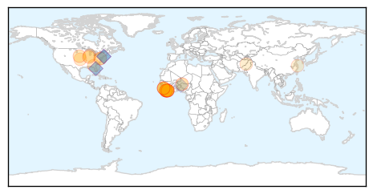
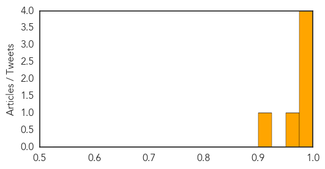

Ebola
30-Day Web Trend
0 alerts, 0 warnings

30-Day Twitter Trend
0 alerts, 0 warnings
Article Locations
Article Confidences

Top Articles:
- 1.000
- State of emergency declared in Liberia,Sierra Leone after Ebola outbreak, as Schools closed, villages quarantined,epidemic claims over 700 lives across 3 west African nations
- 0.999
- Statement on the 7th meeting of the IHR Emergency Committee regarding the Ebola outbreak in West Africa
- 0.999
- Lessons Learned from Ebola Shared at Consortium Symposium
- 0.999
- Liberia declared Ebola-free after weeks of no cases
- 0.992
- Dedicating Emergency Operations Centers in West Africa
- 0.988
- Ebola is still a PHEIC
- 0.968
- New centers help health workers fight deadly infections
- 0.966
- Liberia Receives EU Ebola Delegation; Lauds Partners In Progress Against Ebola
- 0.926
- Rethinking the Ebola response: How Liberians helped themselves
- 0.923
- News in Brief 05 October 2015 (AM)
- 0.888
- CANR to host lecture on pathogen research by NIH's Kindrachuk
- 0.838
- UI receives $2.2 million and is named Prevention Epicenter by CDC
- 0.774
- We Have Come a Long Way – President Koroma Tells UN Envoy
- 0.719
- Sierra Leone Telegraph
- 0.705
- Midwifery Curriculum Review Meeting ends in Freetown
- 0.704
- CDC awards Emory $2.2 million grant to prevent spread of infectious diseases, including Ebola, in health care facilities
- 0.681
- Experiments on Chimps
- 0.675
- AUC Chairman on five day working visit to Cuba
- 0.570
- Afghanistan: Kunduz bombing latest
- 0.557
- Gupta: Epidemic of gun violence is treatable
- 0.551
- U.S. Government Implements the New ICD-10 Which May Increase Medical Bills
- 0.535
- Video feature: Princeton-Fung Global Forum to focus on lessons from the Ebola crisis
Top Tweets:
- 0.906
- RT: WHO's ebola emergency committee met last week and says outbreak developments stil a public health emergency 1/2 http:…
- 0.903
- WHO Committee Says Ebola Remains a Public Health Emergency of International ... - Infection Control Today http://t.co/np2X17cped ebola EVD
- 0.790
- Liberia. Fistula Cases Spiked Due To Ebola Outbreak http://t.co/KYyPqiDFCl
- 0.789
- Asian Ebola virus active in almost all states says NIV study - The Indian Express http://t.co/VLtbuRK9Es ebola EVD
- 0.789
- Asian Ebola virus active in almost all states says NIV study - The Indian Express http://t.co/H0DjCoOlEC ebola EVD
- 0.735
- 's role in Ebola outbreak was pivotal applying Nigeria lessons and boosting health worker capacity
- 0.713
- Rethinking the Ebola response: How Liberians helped themselves - Devex http://t.co/KQftjQQTIu ebola EVD
- 0.709
- Liberia. Controlling the last known cluster of Ebola Virus Disease http://t.co/8IEAn5gUJM
- 0.699
- RT: Ebola tweet chat HWForum h…
- 0.699
- RT: Ebola tweet chat HWForum h…
- 0.663
- After Ebola global health experts say crisis is the new normal - EurActiv http://t.co/GJwm9h8rch ebola EVD
- 0.624
- RT: Nigeria's Ebola control plan was adopted by other African countries & beyond @EbolaAlert @_African U…
- 0.619
- RT: 2/2 Per WHO's ebola emergency committee statement 34 countries still have trade or travel restrictions negatively im…
- 0.581
- WHO Committee Says Ebola Remains a Public Health Emergency of International ... - Infection Control Today http://t.co/EH6KGqUzFR
MERS
30-Day Web Trend
0 alerts, 0 warnings

30-Day Twitter Trend
0 alerts, 0 warnings
Article Locations

Article Confidences
Top Articles:
Top Tweets:
-
No tweets found for Oct 05, 2015